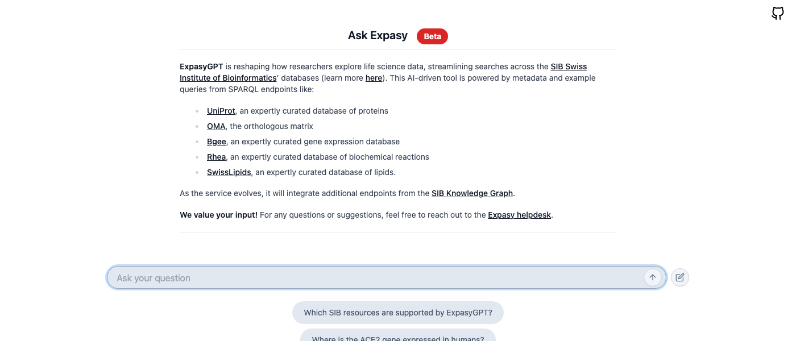
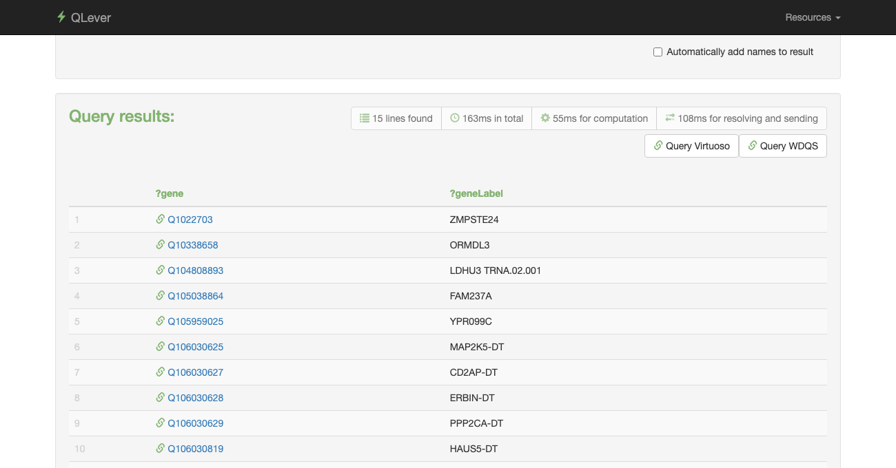

The most universal data format in the world is the spreadsheet. It gives us two things: structure and flexibility. We can record observations, group them by what they have in common, and share them with anyone who has a computer.
A table has rows — one per observation — and columns — one per property. We choose which properties matter and organise our world accordingly.
The spreadsheet is not just a tool — it is a worldview.
Every Excel file embeds a set of decisions: what to measure, what to call it, and how to group it. Those decisions shape what questions you can later ask of the data.
Example: a clinical data table
patient_id
date
diagnosis
value
unit
12345
2024-01-15
diabetes
7.2
HbA1c%
12345
2024-02-20
diabetes
6.9
HbA1c%
67890
2024-01-10
hypertension
140
mmHg
67890
2024-03-05
hypertension
135
mmHg
44210
2024-02-01
asthma
68
FEV1%
44210
2024-02-01
asthma
72
FEV1%
99001
2024-03-12
diabetes
8.1
HbA1c%
This table looks clean and complete. But is it? We will revisit it in a few slides.
Problem 1: our world has many dimensions — tables have two
The world needs to express:
Time
When did this happen? For how long? In what sequence?
Hierarchy
Is this a subtype of something? Part of a larger whole?
Relationships
How does this entity relate to others? Via which property?
Provenance
Who measured this? With what instrument? Under which protocol?
Uncertainty
How confident are we? Is this estimated, measured, or inferred?
Context
In which clinical setting? Which coding system? Which version?
But a table only gives you:
↑ ROWSCOLUMNS →
= 2 dimensions
Every additional dimension of meaning must be flattened into those two.
Time becomes a column. Hierarchy becomes a lookup table. Provenance disappears entirely. The richer the world, the more we compress.
Problem 2: reconstructing our world from tables gives a coarse picture
A table can only store rows and columns. Every extra dimension — colour gradients, spatial relationships, fine detail — must be flattened into numbers, and the reconstruction is always an approximation.
Rich visual reality
→
flatten to table
channel_R.csv
x
y
R
0
0
82
1
0
79
2
0
85
3
0
91
4
0
105
5
0
198
6
0
188
+ channel_G.csv & channel_B.csv 7,990,272 rows each
3 tables · 7.99 M rows each
→
reconstruct from table
Coarse reconstruction — detail lost
The richer the original, the coarser the reconstruction. A table preserves values — but loses gradients, context, and the relationships between pixels. The same happens to clinical data.
More structure, more dimensions — and more formats
Relational databases gave us more expressive power: foreign keys, joins, normalisation. But this also kicked off an explosion in structured formats, each solving a different slice of the problem.
1970s – 1990s
Relational Databases
Tables linked by foreign keys
SQL for queries
Schemas enforce structure
Single format, single vendor
1990s – 2000s
File Exchange Formats
CSV & TSV for portability
XML for hierarchical data
EDI for transaction data
Each domain invents its own
2000s – 2010s
Web & API Data
JSON for REST APIs
HTML + microdata
Domain-specific schemas
Version drift between APIs
2010s – now
Specialist Formats
FHIR for health IT
OWL / RDF for ontologies
Parquet / Arrow for analytics
GraphQL, gRPC, Protobuf…
The result: dozens of formats, hundreds of files, each making slightly different assumptions about the world.
Every new data source adds another dialect to an already crowded conversation.
Trying to consolidate all this data is daunting — if at all possible
Each organisation accumulates its own data landscape. When you try to answer a question that spans multiple systems — or multiple organisations — you encounter the full complexity of what was kept implicit.
⊞
Many sources, many silos
Hospital A, Hospital B, research cohort, national registry, published literature — each has its own data, its own schema, its own access policy.
None was designed to talk to the others.
≠
Many formats, no common language
FHIR resources, OMOP tables, CSV extracts, OWL ontologies, REST APIs — each encodes the same clinical reality differently.
Translating between them requires expert knowledge that is rarely documented.
⌛
Many versions, silent drift
SNOMED releases twice a year, LOINC twice a year, ICD every few years. Each system in your landscape may be on a different version.
A valid match last year may no longer hold today.
This is not a failure of individual systems — each was well-designed for its purpose. It is an emergent property of building data infrastructure without a shared semantic foundation.
The ambiguity problem: structured data hides implicit knowledge
When we create a table, we make dozens of decisions that go undocumented. The data consumer — human or machine — must guess what the creator intended. Let's revisit our clinical table from slide 2.
The same table from slide 2:
patient_id
date
diagnosis
value
unit
12345
2024-01-15
diabetes
7.2
HbA1c%
67890
2024-01-10
hypertension
140
mmHg
patient_id
Which system issued this ID?
Is patient 12345 in Hospital A the same person as patient 12345 in Hospital B?
Is this a national ID (BSN), a local record number (MRN), or an internal ID?
date
Date of what exactly? Measurement? Sample collection? Lab processing? Data entry?
Which timezone? (relevant for international studies)
diagnosis
Which coding system? ICD-10? SNOMED CT? Free text? A local code?
Primary or secondary diagnosis?
Assigned by a clinician or an algorithm?
value
Without a unit, this number is meaningless.
Which instrument? Which measurement method? Which reference range?
unit
"HbA1c%" — which standard? NGSP and IFCC give different numeric results for the same blood sample.
Is this a standardised code (UCUM) or just free text?
The Semantic Web: making the implicit explicit
The Semantic Web is a W3C initiative to make data on the web machine-understandable — not just machine-readable. Its core insight is simple: if every concept has a unique address and every relationship has a standard form, ambiguity disappears.
01
URI / IRI
Give every concept a unique address
Instead of the string "diabetes", use a web address that resolves to a formal definition:
http://snomed.info/id/73211009
Anyone — human or machine — can look it up and get the same unambiguous concept.
02
Subject – Predicate – Object
Describe all relationships as triples
Every fact becomes a sentence with exactly three parts:
patient:12345 has-diagnosis snomed:73211009
This single structure can express any relationship in any domain — and machines can process it without custom parsers.
03
Linked Open Data
Link datasets together
Unambiguous identifiers link datasets together
When patient data, drug data, and gene data all use the same URIs, they automatically form a connected graph:
patient → gene → protein → pathway → drug
No joins. No ETL pipeline. Just follow the links.
From making data available to connecting data: 5-star linked data
★
Findable & accessible via web technology
Available via standard protocols (HTTP) — internally or externally. Licence is clear and explicitly documented. Findable, but barely machine-processable.
★★
Structured data
Data in a structured format such as Excel or a proprietary database dump. Readable, but the format is vendor-specific.
Excel sheets · database exports
★★★
Non-proprietary format
CSV, XML, or another format readable without a licence. Exchangeable, but the meaning of codes remains implicit.
LOINC CSV · ATC XML · SNOMED RF2
★★★★
URIs as identifiers
Each concept gets a unique, globally resolvable URI. Ambiguity disappears: two systems pointing to the same URI mean the same concept.
snomed:73211009 · loinc:2160-0
★★★★★
Linked to other data
Data is connected to external datasets via standardised relationships. Datasets link to each other — and can be queried together.
→ The Semantic Web
Most datasets today sit at ★★ to ★★★. Moving to ★★★★★ requires two things: URIs as identifiers and a uniform exchange format. That is exactly what RDF provides.
RDF (Resource Description Framework) is the W3C standard at the heart of the Semantic Web. It solves two fundamental problems at once.
01
Format fragmentation
Every data source speaks its own language — CSV, XML, JSON, SQL, OWL, API. Every integration requires a custom parser built from scratch.
↓
Solution
Everything is a triple
RDF reduces all data to one structure: subject – predicate – object. Regardless of the original format, every fact is expressed as a relationship between two things.
The code '73211009' is just a number. Which system? Which version? Two systems may use the same string for completely different concepts.
↓
Solution
Globally unique identifiers (IRIs)
Every entity gets an IRI — a globally unique web address that can also be resolved: you can navigate to it and retrieve the formal definition.
"diabetes"
→ http://snomed.info/id/73211009"patient ID 12345"
→ https://amsterdamumc.nl/patients/12345"HbA1c measurement"
→ http://loinc.org/4548-4
"People think RDF is a pain because it is complicated. The truth is even worse. RDF is painfully simplistic, but it allows you to work with real-world data and problems that are horribly complicated."
— Dan Brickley
RDF · Flexibility
The flexibility of RDF: triples, IRIs, and namespaces
RDF's power comes from three interlocking ideas. Together they make it possible to describe any domain, at any level of detail, in a way that is both machine-readable and globally interoperable.
01
The Triple
Every fact is a subject–predicate–object triple. This single, universal structure can express any relationship in any domain — patient observations, gene functions, drug interactions, legal citations. No schema needed to start; you add what you know.
:patient12345 :hasDiagnosis snomed:73211009 .
02
The IRI
Every entity in a triple is identified by an IRI — a globally unique web address. IRIs eliminate ambiguity: two systems that use the same IRI mean the same thing. An IRI can be resolved in a browser to retrieve the formal definition of the concept.
http://snomed.info/id/73211009
03
The Namespace
IRIs are grouped into namespaces — shared prefixes that identify who coined the term and in which context. A namespace is a commitment: every IRI in it follows the same conventions and can be understood as a family of related terms.
snomed: http://snomed.info/id/ loinc: http://loinc.org/
Why this matters: The choice of namespace determines how precisely you can describe your data. A coarse namespace gives you broad categories; a fine-grained namespace gives you the detail you need to distinguish subtly different concepts. The triple and the IRI are flexible by design — the namespace is where specificity lives.
RDF · Namespaces
Namespace choice determines the granularity of your description
One namespace can cover more or less detail than another. This is not a technical accident — it is a reflection of the ontological commitments that went into designing it. Choosing the right namespace is choosing how precisely you want to describe the world.
Coarse — broad categories, few distinctions
ICD-10
Billing and administrative codes. Groups many clinical conditions into a single code. Designed for epidemiology and reimbursement, not research precision.
Literature indexing terms. Useful for finding papers, but not granular enough to distinguish clinical subtypes or molecular mechanisms.
mesh:D003924 → "Diabetes Mellitus, Type 2"
Fine-grained — specific concepts, rich hierarchy
SNOMED CT
Clinical terminology with hundreds of thousands of precisely defined concepts. Distinguishes aetiology, laterality, severity, and context. The right namespace for clinical decision support.
sct:44054006 → "Diabetes mellitus type 2" (exact) sct:420868002 → "Disorder due to type 2 diabetes"
ChEBI / UniProt
Molecular-level namespaces. ChEBI distinguishes individual chemical entities; UniProt identifies specific protein isoforms. Essential for omics and pharmacology research.
There is no universally correct choice. A coarse namespace is fine for counting cases across a population. A fine-grained namespace is essential for integrating molecular and clinical data. The key insight: switching namespace later is possible — but requires explicit mapping work.
SPARQL · Querying the Semantic Web
SPARQL: asking questions in sentences
English puts words in Subject → Verb → Object order.
SPARQL puts data in Subject → Predicate → Object order.
Once you see that, you can build any query — one sentence at a time.
Why this matters now: AI assistants can generate SPARQL from plain language. But to use that well — or to check whether it is correct — you need to think in sentences about your data yourself. "The gene is associated with asthma" is the sentence. The SPARQL follows naturally.
One sentence = one triple. To write a SPARQL query, you list the sentences that describe what you are looking for. Each sentence becomes a triple pattern. The query engine finds everything in the graph that matches.
English
SubjectVerbObject
The gene
is associated with
asthma
The gene
encodes
a protein
The protein
is located in
the cell membrane
SPARQL
SubjectPredicateObject
?gene
wdt:P2293
wd:Q35869
?gene
wdt:P688
?protein
?protein
wdt:P681
?membrane
"People think RDF is a pain because it is complicated. The truth is even worse. RDF is painfully simplistic, but it allows you to work with real-world data and problems that are horribly complicated. While you can avoid RDF, it is harder to avoid complicated data and complicated computer problems. RDF brings together data across application boundaries and imposes no discipline on mandatory or expected structures."
— Dan Brickley and Libby Miller
OWL · Knowledge Representation
OWL: making knowledge formal enough to reason over
RDF lets you state facts. OWL lets you state rules about facts — and a reasoner can then automatically derive conclusions you never explicitly wrote down.
What OWL adds on top of RDF
Classes & subclasses
Define hierarchies formally: Hypertension rdfs:subClassOf CardiovascularDisease Type2Diabetes rdfs:subClassOf MetabolicDisease
Every patient with hypertension is automatically a cardiovascular patient.
Property restrictions
Constrain what is allowed: hasParent owl:maxCardinality 2 hasDiagnosis owl:someValuesFrom Disease
Violations surface automatically — no validation script needed.
patient:042 rdf:type CardiovascularDisease inferred
⚠ patient:042 is both Alive and Deceased contradiction
Used everywhere in biomedicine. SNOMED CT, the Human Phenotype Ontology, Gene Ontology, and ChEBI are all OWL ontologies. Reasoners classify patients into cohorts, propagate annotations up the hierarchy, and flag inconsistencies — automatically.
Looking Ahead · Generative AI
LLMs and the Semantic Web: the gap is closing
SPARQL has always been closer to plain English than it looks — it follows the same Subject–Verb–Object order we use in sentences. Yet it is perceived as a technical barrier. Generative AI is changing that perception into reality.
The argument: SPARQL thinks like a sentence
Every SPARQL triple pattern maps directly to the way we talk. "The gene is associated with asthma" and the query pattern that retrieves it share exactly the same structure.
Subject ?gene
Predicate wdt:P2293
Object wd:Q35869
The reality: it is still perceived as difficult
Prefixes, endpoints, property codes like wdt:P2293, the syntax around SERVICE and FILTER — the conceptual model is simple, but the surface form creates friction. Many researchers stop at "I'd need to learn SPARQL first."
The shift: Generative AI can translate a plain-language question into a valid SPARQL query, run it against a live endpoint, and return structured results — without the user ever seeing the query. The Semantic Web becomes queryable in natural language.
LLM as query translator
"Which genes are associated with diabetes?"→ LLM →SELECT ?gene WHERE {…}→ endpoint →structured results
chat.expasy.orgSIB Swiss Institute of Bioinformatics · beta

Covers UniProt · OMA · Bgee · Rhea · SwissLipids — natural language in, structured biological data out. LLMs hallucinate; knowledge graphs don't. The combination is more reliable than either alone.
Practical Pitfall · URI Identity
http:// ≠ https:// — a silent killer in linked data
In RDF, every resource is identified by its full IRI — character for character. Two IRIs that look nearly identical to a human are completely unrelated to any triple store. No warning, no redirect, no fuzzy match. Queries just silently return nothing.
Schema.org — the world's most-used vocabulary
legacyhttp://schema.org/name
canonicalhttps://schema.org/name
Billions of published triples still use the http:// form. A JOIN across old and new datasets returns nothing — without owl:sameAs bridges or normalisation at load time.
Wikidata — entity IRI vs browser page URL
entity IRIhttp://www.wikidata.org/entity/Q42
page URLhttps://www.wikidata.org/wiki/Q42
The entity IRI (http://…/entity/Q42) is the RDF subject for all triples. The browser address (https://…/wiki/Q42) is the human-readable page — a different IRI entirely. Two differences at once: scheme and path.
⚡ The consequence
A SPARQL pattern like ?s schema:name ?n — where schema: is declared as https:// — finds nothing in a dataset loaded with http:// prefixes. The query is syntactically valid, runs without error, and returns an empty result set. There is no diagnostic.
LLMs make this worse. A language model may confidently generate a query using the wrong variant — both forms appear in its training data. The query runs, returns zero results, and nothing flags the mismatch as an error rather than a "no data" answer.
How to handle it
• Always copy the IRI exactly from the vocabulary's namespace document
• Normalise on load: one sed pass beats a thousand sameAs triples
• Validate declared prefixes in ShEx / SHACL shapes before ingesting data
• When using LLM-generated queries, verify the prefix declarations first
SPARQL in Practice · Endpoints & REST
SPARQL is a web service — and tools already know how to render it
A SPARQL endpoint is just an HTTP service: send a query, get back JSON / CSV / TSV. No special driver needed — any browser, script, or notebook can call it directly.
Auto-detects result type → one-click rendering as table, map, bubble chart, timeline, or image grid.
QLeverqlever.cs.uni-freiburg.de · sub-second on billions of triples

High-performance engine powering endpoints over Wikidata, UniProt, PubChem. Same REST interface, same result formats.
Any endpoint via HTTPhttps://query.wikidata.org/sparql?format=json&query=SELECT…DBCLS SPARQLlist wraps queries as parametrised REST APIs → embeddable in any app
SPARQL in Practice · Analysis Pipelines
From knowledge graph to dataframe to analysis
SPARQL query results are just tables — and tables slot directly into the analysis tools you already use. The only new step is fetching the data from an endpoint instead of loading a file.
SPARQL query
→
JSON / CSV / TSV
→
DataFrame
→
Visualise · Model · Publish
Python · Jupyter Notebook
# fetch from any SPARQL endpointfrom SPARQLWrapper import SPARQLWrapper, JSON
import pandas as pd
sparql = SPARQLWrapper("https://query.wikidata.org/sparql")
sparql.setQuery("""
SELECT ?gene ?geneLabel ?disease WHERE {
?gene wdt:P2293 ?disease .
SERVICE wikibase:label { bd:serviceParam
wikibase:language "en" }
} LIMIT 100""")
sparql.setReturnFormat(JSON)
results = sparql.query().convert()
df = pd.json_normalize(results["results"]["bindings"])
# now it's a regular DataFrame
df.groupby("disease.value").count().plot()
The workflow is familiar. You load data, clean it, analyse it, visualise it. The only difference is where the data comes from: instead of reading a CSV, you query a knowledge graph that already integrates gene, disease, drug, and patient data — without any manual join.
Data Quality · Validation
Data Shapes: documenting and verifying structural expectations
RDF lets you say anything about anything — which is powerful, but also means nothing enforces that your data looks the way you expect. Data shapes are a layer on top of RDF that lets you write down exactly what you expect a valid piece of data to look like, and then automatically check whether your data meets those expectations.
Three technologies do this — at different levels of formality:
ShExShape Expressions — a compact, readable language for writing shapes. Well-suited for bioinformatics and Wikidata curation. Shapes look almost like grammar rules for RDF.
SHACLShapes Constraint Language — the W3C standard. Written in RDF itself, making it easy to store alongside the data it validates. Used widely in enterprise and health data contexts.
LinkMLLinked data Modelling Language — a higher-level schema language that can generate ShEx, SHACL, JSON Schema, and more from one source model. Great for designing data models from scratch.
You do not need to master all three. The important concept is the same in each: write down what valid data looks like, and then check whether your data is valid.
A shape is more than a validator. It is a living document of the assumptions baked into your data model — and a tool for catching when those assumptions are broken.
01Document design choices
Every shape is also documentation. By writing down "a patient must have exactly one birth date of type xsd:date", you are recording a decision that would otherwise live only in someone's head or in a README nobody reads. Shapes make implicit contracts explicit.
02Test if existing data fits expectations
When you receive a new dataset — from a collaborator, a public repository, or an ETL pipeline — run it against your shapes before using it. Violations surface problems early: missing fields, wrong types, unexpected codes, values out of range.
03Regression testing after updates
Data changes over time — new records are added, ontologies are updated, pipelines are revised. Re-running shape validation after any change tells you immediately whether the update broke something that used to be valid. Shapes turn data quality into something you can test repeatedly.
04Detect data errors and inconsistencies
A patient with a diagnosis date before their birth date. A drug dose recorded as a string instead of a number. A required identifier that is missing. These are errors that queries and visualisations will silently propagate — shapes catch them at the source.
Data Shapes · Interpretation
A validation error: data problem or model problem?
When a shape validation fails, it does not automatically tell you what to fix. A violation always has two possible explanations — and deciding which one is correct requires human judgement.
The data is wrong
The shape correctly describes what the data should look like, and the data simply does not match. Something went wrong upstream: a field was left empty, a code was entered incorrectly, a unit was omitted, or a record was corrupted during transfer.
The data is actually correct — it reflects a real-world situation that the shape did not anticipate. The shape was written under assumptions that no longer hold, or was never complete enough to begin with. The model needs to be updated.
patient:88888 :birthDate "ca. 1940" . → approximate date — valid in context
Fix: revise the shape to accommodate reality.
Shape validation is always a balance act. A very strict shape catches more errors but rejects more valid data. A very permissive shape accepts everything but validates nothing. The right balance depends on your use case — and finding it is an ongoing, collaborative process between data modellers and data producers.
RDF · Interoperability
Bridging namespaces: four approaches
Because different datasets use different namespaces, RDF provides — and the community has developed — several mechanisms to map between them. Each operates at a different level and serves a different purpose.
SPARQL CONSTRUCTQuery-based transformation
A special type of SPARQL query that does not return a table of results but generates new RDF triples. You can use it to translate data from one namespace to another on the fly: match patterns using the source vocabulary, then emit triples using the target vocabulary.
CONSTRUCT { ?p ex2:diagnose ?d } WHERE { ?p ex1:hasDiagnosis ?d }
ShapeMapsShape-driven selection & mapping
A companion technology to ShEx. A ShapeMap selects which nodes in an RDF graph should conform to which shape, and can drive transformation pipelines: "take nodes of this type from namespace A and project them into the structure expected by namespace B." Useful for complex graph-to-graph conversions.
SSSOMSimple Standard for Sharing Ontology Mappings
A table-based format for recording mappings between identifiers across ontologies. Each row states that concept A in namespace X is equivalent to (or broader/narrower than) concept B in namespace Y, with a confidence score and provenance. Designed for human curation and machine consumption.
icd10:E11 skos:closeMatch sct:44054006 [confidence: 0.95]
SKOSSimple Knowledge Organization System
A W3C vocabulary for expressing concept schemes — hierarchies, synonyms, related terms, and cross-vocabulary links. skos:exactMatch, skos:closeMatch, skos:broader and skos:narrower let you declare relationships between terms in different namespaces directly in RDF, without a separate mapping file.
snomed:73211009 skos:closeMatch icd10:E11 .
ShEx Map Extension · Schema Transformation
Bridging incompatible RDF healthcare schemas
🔴 The problem
Healthcare data lives in many mutually incompatible vocabularies: FHIR RDF, openEHR, OMOP, domain-specific application models
Converting between them requires custom, brittle, hand-written scripts
No declarative way to state that fhir:givenName and :given refer to the same concept
Round-trip fidelity is hard to verify
🟢 ShExMap's answer
Annotate ShEx triple constraints with %Map:{ variable %} to name the value at that position
Validate source RDF → extract a set of named variable bindings
Materialize those bindings via a second annotated schema → generate target RDF
Schemas serve as both validators and transformation specifications — one artefact, two purposes
Bidirectional by design: FHIR→DAM and DAM→FHIR use the same pair of schemas
The regex() annotation reconstructs :name "Walker, Alice" from the two separate name variables captured in FHIR. The same schema pair runs the inverse transform (DAM → FHIR) without modification.
Relational → RDF · R2RML & Ontop
R2RML & Ontop: RDF views over relational databases
Most clinical data lives in relational databases — OMOP CDM, EHR tables, registries. R2RML (W3C standard) declares how rows and columns map to RDF triples. Ontop then rewrites every incoming SPARQL query to SQL on the fly, so the data never has to move or be copied.
A TriplesMap has three parts
logicalTable — which SQL table or view to read
subjectMap — how to build the IRI for each row (the RDF subject)
predicateObjectMap — which column maps to which predicate & object
JSON / CSV / TSV — zero data movement, zero duplication
No copy, no conversion. The relational data is never physically turned into RDF — it is seen as RDF through the mapping layer. One R2RML file; your existing database; unlimited SPARQL queries over it.
Real-world interoperability · Rowdy de Groot
OMOP ↔ FHIR via virtual knowledge graphs (Ontop)
Instead of physically converting OMOP CDM data to FHIR, Ontop creates a
virtual RDF layer via OBDA mappings — no ETL, no duplication.
Queries written in SPARQL span both worlds at once.
① FHIR mapping (OBDA)
Ontop OBDA file declares how OMOP CDM tables map to FHIR classes & predicates
(fhir:MedicationStatement, fhir:subject, …)
② OMOP concepts remain native
OMOP's concept table is exposed directly as
<omop#Concept> RDF — drug codes, names, vocabularies intact
③ SPARQL joins both in one query
A single query retrieves FHIR MedicationStatements and resolves
RxNorm codes to concept names via the OMOP concept graph — zero data movement
Work by Rowdy de Groot — uses
Ontop (ontop-vkg.org)
as the OBDA engine bridging OMOP CDM and FHIR RDF
# Only RxNorm codes FILTERregex(str(?rxnormCode), "^[0-9]+$")
} LIMIT 20
Architecture · The Full Stack
From raw tables to a reasoning knowledge graph
Raw data
Tables / CSV
Excel · databases
XML
HL7 · FHIR bundles
JSON
REST APIs · FHIR R4
Other formats
OMOP · Parquet · TSV
↓
Lift to triples — assign IRIs
Semantic foundation
RDF Triples
Subject · Predicate · Object
IRIs & Namespaces
snomed: · loinc: · schema: · wdt:
Bridging
CONSTRUCT · SSSOM · SKOS
↓
Formalise & constrain
Knowledge layer
OWL Ontologies
Classes · Properties · Axioms · Reasoning
Shapes: SHACL · ShEx · LinkML
Validate · Document · Regression-test
↓
Query the graph
Query & access
SPARQL
SELECT · CONSTRUCT · ASK
Wikidata QS
query.wikidata.org
QLever
qlever.cs.uni-freiburg.de
REST / SPARQLlist
DBCLS · parameterised APIs
↓
Analyse · reason · discover
Applications
R · Python · Jupyter
DataFrames · Visualisation
AI / LLMs
chat.expasy.org · NL→SPARQL
Dashboards
Reports · Decision support
Federated analysis
Multi-site · Cross-domain
Conclusion
What we covered — and why it matters
Data has limits. Spreadsheets and relational databases flatten a multi-dimensional world into two dimensions — and that compression causes ambiguity, integration problems, and lost knowledge.
The Semantic Web offers a way out. RDF expresses facts as triples. IRIs eliminate ambiguity. Namespaces organise knowledge. SPARQL queries traverse the resulting graph without custom parsers or ETL pipelines.
Shapes add discipline. ShEx, SHACL and LinkML let you document your data model, validate incoming data, and catch regressions — turning data quality from a conversation into a test suite.
Namespace choice is a design decision. The granularity of the namespace determines how precisely you can describe your domain. Too coarse and you lose detail; too fine and you gain complexity. The right choice depends on your use case.
Bridging is possible. SPARQL CONSTRUCT, ShapeMaps, SSSOM and SKOS provide principled ways to translate between namespaces — making it possible to integrate datasets that were built independently, in different communities, for different purposes.
Virtual knowledge graphs skip the ETL entirely. Ontop-style OBDA mappings expose relational data (e.g. OMOP CDM) as RDF on-the-fly — SPARQL queries can then span FHIR and OMOP simultaneously without moving or duplicating a single row.
The Semantic Web is not a silver bullet. But it is the most principled foundation we have for building data systems that remain understandable, interoperable, and extensible over time.
Agenda overview
This webinar covers: why tables fall short → the Semantic Web solution → RDF, namespaces & SPARQL → OWL & shapes → schema transformation with ShExMap → virtual knowledge graphs (Ontop) → full-stack architecture.
Estimated duration: 45 minutes including Q&A.
Details forData in rows and columns
1 / 1
🗃️
Discussion points
Ask the audience: how many separate spreadsheets or databases does your institution maintain for the same patient population? What happens when you try to merge them?
Key tension: tables are excellent for storage and retrieval within a known schema, but terrible at expressing relationships that cross row or table boundaries — which is exactly what clinical and research questions demand.
Details forProblem 1: Dimensionality
1 / 1
📐
Concrete example: a blood pressure reading
A single measurement involves: patient identity, device used, body position, time of day, which arm, systolic value, diastolic value, unit, reference range, recording clinician, and clinical context. A single row with columns bp_sys and bp_dia captures two numbers and loses everything else.
Follow-up question: What dimensions does your data lose that matter most for your research questions?
Details forProblem 2: Coarse reconstruction
1 / 1
🧩
Why joins are not enough
Foreign keys connect rows, but they encode relationships as integers rather than as named, typed predicates. The meaning of a join is implicit in the query, not in the data. This means:
• The same data can be joined differently by different analysts
• Joins break silently when schemas change
• There is no machine-readable record of why two entities are connected
RDF's answer: every relationship is a named, typed triple — the predicate carries the semantics, not the query.
Details forMore structure, more formats
1 / 1
📂
The format landscape in healthcare data
Each format was designed for a specific purpose and community:
• HL7 v2 — messaging between hospital systems (1987, still dominant)
• FHIR R4 — REST-first, JSON/XML/RDF, modern APIs
• OMOP CDM — standardised observational research, large cohorts
• openEHR — clinical archetypes, vendor-neutral EHR modelling
• DICOM — medical imaging metadata
The problem: no single format covers all use cases, so organisations end up maintaining all of them simultaneously.
Details forIntegration challenge
1 / 1
🔗
Case study: multi-site rare disease cohort
Site A uses OMOP CDM. Site B uses openEHR archetypes. Site C exports custom CSV. Each encodes the same phenotype concept differently. A federated query requires:
1. Mapping each local concept to a shared vocabulary (SNOMED / HPO)
2. Harmonising date formats, units, and null conventions
3. Agreeing on a common patient pseudonymisation scheme
With RDF + shared ontologies, steps 1–2 become a one-time declaration rather than per-query transformation code.
Details forAmbiguity in data
1 / 1
❓
The "glucose" problem
The string "glucose" appears in at least four distinct senses across lab systems:
A system that stores the label "glucose" without the LOINC code conflates all four. Downstream queries will silently return incorrect results — with no error or warning.
IRIs eliminate this: each concept has one globally unique identifier with a resolvable definition.
Details forThe Semantic Web
1 / 1
🌐
Historical context
Tim Berners-Lee, James Hendler and Ora Lassila published "The Semantic Web" in Scientific American in May 2001 — describing a web in which machines could understand the meaning of content, not just its structure.
The key W3C standards that followed: RDF (2004), OWL (2004), SPARQL (2008), RDF 1.1 (2014), SHACL (2017).
Tim Berners-Lee's original design note outlining the four core principles for publishing Linked Data — use URIs as identifiers, make them HTTP URIs, serve useful information when looked up, and include links to other data. Also the source of the five-star rating system shown on this slide.
TBL explains that Linked Data works best when multiple vocabularies are combined and consumers simply ignore what they don't understand — just like a chip bag label that contains nutrition facts, barcodes, and allergen warnings for different audiences simultaneously.
A practical companion site to TBL's five-star scheme — shows concrete examples at each star level along with the costs and benefits of moving up, helping organisations decide where to invest their data publishing effort.
Details forRDF: the foundation
1 / 1
RDF serialisation formats
The same set of triples can be written in several syntaxes. The meaning is identical — only the notation differs:
Turtle — compact, human-readable. The most common format for writing RDF by hand.
JSON-LD — RDF embedded in JSON. Easy for web developers; used by schema.org.
N-Triples — one triple per line, no prefixes. Simple to parse programmatically.
RDF/XML — the original W3C syntax. Verbose but widely supported in legacy tools.
Further reading — Chapter 5 of Validating RDF Data covers the RDF data model in detail:
SPARQL query types
• SELECT — return a table of matching variable bindings
• CONSTRUCT — return a new RDF graph built from matched patterns
• ASK — return true/false whether a pattern exists
• DESCRIBE — return all known triples about a resource
Try it:query.wikidata.org — a live SPARQL endpoint over 100 M+ statements, with autocomplete and example queries for biomedical data.
Details forOWL & Reasoning
1 / 1
🦉
Open-world vs. closed-world assumption
OWL uses the open-world assumption: the absence of a fact does not mean it is false — it may simply be unknown. This is the right assumption for distributed linked data where no single source is complete.
Relational databases use the closed-world assumption: if it is not in the database, it does not exist.
Reasoners: HermiT, Pellet, ELK (fast, scalable for OWL EL profile used by SNOMED CT and Gene Ontology).
Rule of thumb: use SPARQL to find data; use a reasoner to infer new data from axioms.
Details forLLMs and the Semantic Web
1 / 1
🤖
Why grounding LLMs in knowledge graphs matters
LLMs generate plausible text — they do not retrieve verified facts. When asked about a gene–disease association, an LLM may confabulate a citation. A KG-grounded system like chat.expasy.org constrains the answer to triples that are actually present in UniProt / Bgee / OMA.
Active research area: retrieval-augmented generation (RAG) over SPARQL endpoints.
⚠️ Disclaimer: still in its infancy
Despite impressive demos, LLM-generated SPARQL is not yet reliable in production. Results vary significantly across models, endpoints, and vocabularies — and failures are often silent. A recurring failure mode is IRI / prefix mismatch: the model writes http://schema.org/name when the loaded dataset uses https://schema.org/name, or queries https://www.wikidata.org/wiki/Q42 (the browser URL) instead of the correct entity IRI http://www.wikidata.org/entity/Q42. The query runs, returns nothing, and nothing raises an alarm — making it look like "no data" rather than "wrong query." Other known failure modes include hallucinated property IDs (e.g. inventing wdt:P9999), incorrect OPTIONAL / FILTER scoping, and mismatched graph contexts in federated queries. Always validate generated queries against a small, known dataset before trusting the results.
Details forURI Identity & Prefix Mismatches
1 / 1
🔗
More real-world IRI mismatch examples
FOAF (Friend of a Friend):
The FOAF vocabulary has always used http://xmlns.com/foaf/0.1/ — there is no https version. Tools that "helpfully" upgrade the scheme silently break federation with any dataset that uses the canonical form.
DBpedia: http://dbpedia.org/resource/Berlin is the stable entity IRI. Some mirrors serve over https, but the published triples use http. Mixing them in a JOIN produces empty results with no error.
OBO ontologies:
PURL-based IRIs like http://purl.obolibrary.org/obo/HP_0001250 are persistent and intentionally HTTP. Upgrading them to HTTPS silently breaks federation with the OBO Foundry endpoints.
The underlying rule: An IRI is a name, not a URL. Treat it as an opaque string and copy it exactly from the vocabulary's published namespace document. The fact that a browser follows http:// and https:// to the same page is irrelevant — the triple store does not browse, it compares strings.
SPARQLlist wraps any SPARQL query as a parameterised REST API — useful for building dashboards or connecting to BI tools without custom middleware.
Details forKnowledge graph → pipelines
1 / 1
📊
Minimal Python pipeline
pip install SPARQLWrapper pandas
from SPARQLWrapper import SPARQLWrapper, JSON
import pandas as pd
sparql = SPARQLWrapper("https://query.wikidata.org/sparql")
sparql.setQuery("""SELECT ?gene ?geneLabel WHERE {
?gene wdt:P31 wd:Q7187 .
SERVICE wikibase:label { bd:serviceParam
wikibase:language "en" . }
} LIMIT 10""")
sparql.setReturnFormat(JSON)
results = sparql.query().convert()
df = pd.json_normalize(results["results"]["bindings"])
print(df[["gene.value","geneLabel.value"]])
Details forData Shapes
1 / 1
🔷
ShEx vs. SHACL — the same shape in two languages
ShEx (Shape Expressions):
<Patient> { fhir:birthDate xsd:date ; fhir:name xsd:string + }
SHACL (Shapes Constraint Language):
ex:PatientShape a sh:NodeShape ; sh:targetClass fhir:Patient ;
sh:property [ sh:path fhir:birthDate ; sh:datatype xsd:date ] .
ShEx is more concise for schema authoring; SHACL integrates directly into SPARQL-based tooling. Both can validate the same RDF data.
Details forWhat shapes allow
1 / 1
✅
Real-world example: Wikidata gene curation
The Wikidata WikiProject Genes uses ShEx shapes to validate every gene item before it is accepted into the knowledge base. The shape enforces:
• At least one Ensembl gene ID (P594)
• A genomic start and end position (P644, P645)
• A chromosomal location (P1057)
• An NCBI gene ID (P351)
Any item missing a required property fails validation with a clear report pointing to the exact missing triple. This turned data quality from a manual review process into an automated gate.
Details forValidation balance act
1 / 1
⚖️
Iterating on a shape: a worked example
Initial shape requires fhir:birthDate xsd:date. First run against production data: 3 % of records fail — they contain "ca. 1940" (approximate birth year for elderly patients).
Options:
1. Mark those records as data errors and correct them → loses valid clinical information
2. Relax the shape to allow xsd:gYear in addition to xsd:date → preserves the information
3. Add a separate property :approximateBirthYear xsd:gYear → explicit modelling
The right answer depends on the downstream use case. Validation forces the conversation that should have happened at data model design time.
Details forRDF flexibility
1 / 1
🐢
Turtle syntax in 5 minutes
The most human-readable RDF serialisation:
:p12345 a sct:116154003 ; # is-a Patient
sct:has-finding sct:73211009 ; # Diabetes mellitus
rdfs:label "Patient 12345"@en .
IRI dereferencing: navigate to http://snomed.info/id/73211009 in a browser to retrieve the formal SNOMED CT concept definition.
Details forNamespace specificity
1 / 1
🎯
Choosing the right namespace for your use case
Use case
Recommended
Why
Hospital billing
ICD-10
Statutory requirement
Clinical decision support
SNOMED CT
Clinical precision, hierarchy
Literature search
MeSH
PubMed index alignment
Rare disease phenotypes
HPO
Structured phenotype hierarchy
Drug compounds
ChEBI / RxNorm
Chemical precision
Lab observations
LOINC
Universal lab coding standard
Details forBridging namespaces
1 / 1
🌉
SSSOM mapping file example
Simple Standard for Sharing Ontological Mappings (SSSOM) uses a TSV header + rows:
subject_id predicate_id object_id
sct:73211009 skos:exactMatch icd10:E11
sct:44054006 skos:closeMatch mesh:D003924
chebi:17234 skos:exactMatch uniprot:glucose
SKOS predicates: exactMatch = same concept; closeMatch = similar but not identical; broadMatch / narrowMatch for hierarchical relationships.
Details forArchitecture
1 / 1
🏗️
Technology choices at each layer
Layer
Open-source options
Lift to RDF
RML mapper, SPARQL-Generate, Ontop
Triple store
Apache Jena, Oxigraph, Virtuoso, GraphDB
Shapes
shex.js, pySHACL, Apache Jena SHACL
SPARQL endpoint
Fuseki, QLever, SPARQLlist (REST wrapping)
Analysis
SPARQLWrapper (Python), SPARQL.client (R)
Reasoning
HermiT, ELK, Pellet
Details forConclusion
1 / 1
📚
Recommended further reading
• Validating RDF Data — Labra Gayo et al. — free online; covers ShEx and SHACL in depth
• linkml.io — LinkML schema language, generates ShEx / SHACL / JSON Schema from one source
• W3C SPARQL 1.1 Overview — the formal specification
• ontop-vkg.org — Ontop virtual knowledge graphs (OMOP2FHIR example)
• Wikidata Biomedical WikiProject — community-maintained biomedical knowledge graph
Details forShExMap — What & Why
1 / 1
🗺️
Why existing approaches fall short
SPARQL CONSTRUCT can transform RDF but requires hand-writing every mapping as a graph pattern — no schema reuse, no validation, no round-trip guarantee.
XSLT / custom scripts are format-specific and brittle: a schema change breaks every downstream transform.
ShExMap's key insight: the same ShEx schema that validates your data can simultaneously declare what each value means — independently of any particular vocabulary. The %Map:{variable} annotation is the only addition needed.
Further reading:shex.io · shex.js Map extension documentation
Details forShExMap — Pipeline
1 / 1
🔄
What happens at each step
Step 1 — Validate: shex.js walks the input RDF graph against the input schema. Each %Map:{var} annotation registers the matched value under the named variable. If validation fails, no bindings are produced and the error is reported with the failing node and shape.
Step 2 — Bindings: a flat JSON object. Variable names are schema-neutral — they carry no FHIR or OMOP semantics. This is what crosses the schema boundary.
Step 3 — Materialize: the materializer constructs output triples by matching the output schema's %Map:{var} annotations to the bindings object. regex() annotations can reconstruct composite literals (e.g. "Walker, Alice") from multiple captured variables.
Live demo available at:shexmap_demo.html
Details forShExMap — BP Example
1 / 1
🩺
About the blood pressure example
The input schema matches FHIR RDF — a standard that clinical systems already produce. The output schema targets a Domain Application Model (DAM) — a lean, research-specific vocabulary designed for a particular study.
The same pair of schemas also runs in reverse: validate a DAM instance and materialize it back to FHIR RDF — without any additional code.
What makes this bidirectional? Because both schemas annotate their triple constraints with the same variable names (bp:sysVal, bp:family, etc.), the bindings object acts as a shared coordinate system between any two annotated schemas — not just FHIR↔DAM.
Runnable interactive demo: open shexmap_demo.html and select example "bp1".
Details forR2RML & Ontop
1 / 1
🗄️
R2RML vs RML vs YARRRML
R2RML (W3C 2012) is the baseline standard — covers relational databases only. Mapping files are written in Turtle.
RML (RDF Mapping Language) extends R2RML to non-relational sources: CSV, JSON, XML, REST APIs. Mapping syntax is very similar but adds rml:source and rml:referenceFormulation.
YARRRML is a human-friendly YAML serialisation of RML — much easier to author than raw Turtle. The online tool Matey converts YARRRML ↔ RML interactively in the browser.
Ontop vs other engines:
• Ontop — full OWL 2 QL reasoning, live SPARQL→SQL rewrite, used in production with OMOP CDM and EHR systems
• RMLMapper — materialises RDF from any source; simpler, no live query rewrite
• Morph-KGC — Python, fast materialisation, strong CSV/JSON support
Rule of thumb: use Ontop when your database is in production and must stay there. Use RMLMapper / Morph-KGC when you need a one-off materialisation or work with non-relational files.
Details forOMOP2FHIR via Ontop
1 / 1
🏥
How Ontop works
Ontop is an OBDA system (Ontology-Based Data Access). It sits between a relational database and a SPARQL endpoint. An OBDA mapping file declares rules of the form:
[MappingId] MedicationStatement
target fhir:{drug_exposure_id} a fhir:MedicationStatement ;
fhir:subject fhir:{person_id} .
source SELECT drug_exposure_id, person_id FROM drug_exposure
When a SPARQL query arrives, Ontop rewrites it into SQL against the OMOP CDM tables — the RDF graph is never materialised on disk. This means OMOP data stays in place, governance remains unchanged, and FHIR consumers see a live, consistent view.
Additional resources to explore after the webinar. All links are freely accessible online.
Details forThank you
1 / 1
💬
Q&A prompts
• What format is your institution's primary data in today, and what would it take to lift it to RDF?
• Have you encountered a case where two datasets used the same code string for different concepts?
• Which layer of the stack (RDF, SPARQL, shapes, bridging) would be most immediately useful for your work?
• Are there existing SPARQL endpoints in your domain that you could query today?